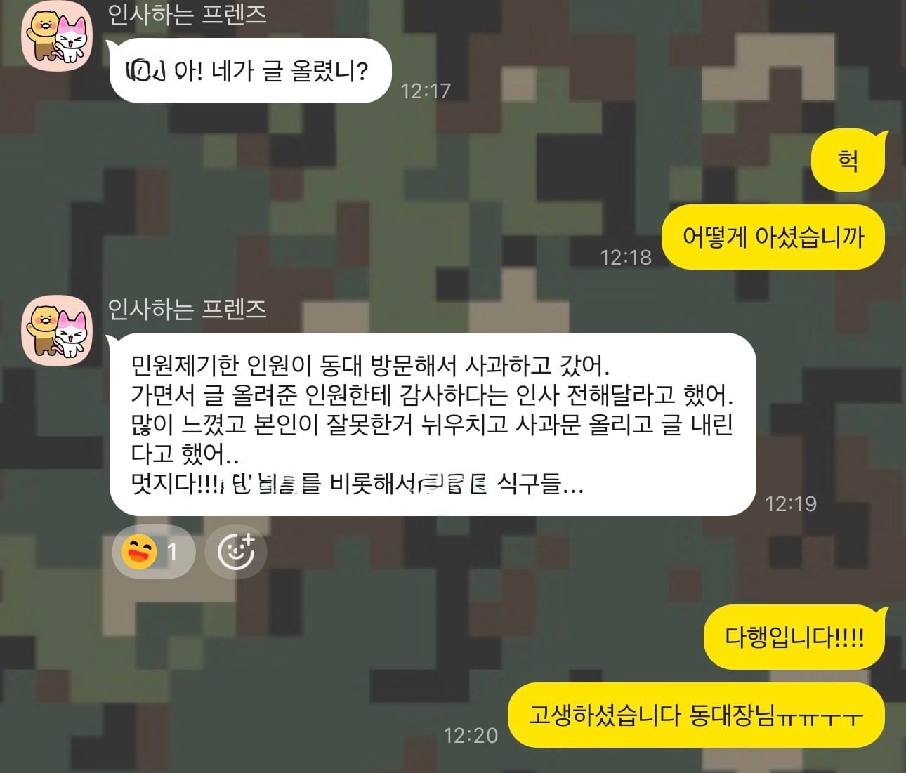

https://www.dogdrip.net/721486405
안녕하세요, 해당 글을 작성한 병사입니다.

오늘 민원을 제기해주셨던 대원님께서 예비군중대를 방문하여 과일과 함께 중대장님께 사과드렸다는 이야기를 들었습니다.
쉽지 않은 결정이셨을텐데, 용기를 내주셨습니다.
어린 자녀분들을 양육하시면서 스트레스도 많이 받으시고, 여러모로 예민하셨을거라 생각합니다. 저 또한 주변의 육아중인 전우들을 보며 육아의 힘듦을 몸소 느끼고 있습니다. 어려운 상황임에도 훈련에 참석해주시고, 끝까지 마쳐주신 대원님께 진심으로 감사드립니다. 저도 이번 일을 통해 많은 것을 배웠습니다.
제가 1년 3개월간 모시던 A 중대장님은 얼마전 다른 지역대의 예비군중대로 전보를 가셨고, 저는 다른 지휘관을 모시고 있습니다. 해당 민원은 제가 1년 3개월간 모셨던 A 중대장님의 새로운 예비군중대에서 발생했습니다.
다른 지역으로 가셨음에도, 저번 주와 같이 종종 찾아 뵈면서 인사 드리고 있습니다. 그래서 오늘 작성자분이 오셨을때 제가 직접 뵙지는 못했습니다. 죄송합니다.
저도 벌써 다다음주면 전역을 하고, 예비군으로서 국방의 의무를 지속하게 됩니다. 사회에 계시다 언제든 나라의 부름을 받고 훈련에 참석해주시는 대원님들께 항상 감사의 마음을 갖고 군생활을 했습니다.
다시 한 번, 해당 사건에 관심을 가져주신 개드립분들께 감사의 말씀을 전합니다. 사과하러 와주신 대원님께도 정말 감사드립니다. 행복한 하루 되시길 기원합니다. 충성!
댓글
수집 당시 댓글 30개
두둠칫둠ㅅ · 15 시간 전
스노곰 · 15 시간 전
그래서 사과문은 어디감
흰수리 · 15 시간 전
카톡배경 탐나네 ㅋㅋㅋㅋ
노엘갤러거스하이플라잉버즈 · 12 시간 전
저렇게 해놓으면 혹시라도 카톡 전송실수같은거 덜하게되더라ㅋㅋㅋㅋㅋ
나도 직장 단톡은 무지개색 바탕에 "여기아님 생각하고 쓰셈"써있는 배경해놓음ㅋㅋ
곰은사람을찢어 · 15 시간 전
사람은 누구나 실수할 수 있고, 착각할 수도 있음
하지만 자신의 잘못을 스스로 인지하고, 그것을 인정하며 사과할 용기가 있는 사람이라면 적어도 사람답게 사는 사람임, 잘못을 하고도 끝까지 인정하지 않고 남의 탓만 하는 순간, 사람인지 금수새끼 인지가 거기서 갈림
초고추장 · 12 시간 전
모 유투버 들으라는 소리 같음. ㅋㅋㅋ
근데 생각해 보니 걔는 반복하는 게, 실수 같지 않음. 착각도 아니고, 사과할 거 같지도 않음
곰은사람을찢어 · 10 시간 전
아닙니다요 그저 인생살면서 하는 생각임 ㅋㅋㅋ
초고추장 · 9 시간 전
농담임. 요즘 이슈되는 사람 생각났음. ^^ 굿잠~
솜털보지 · 15 시간 전
참 글을 잘쓰네
다랑어J · 15 시간 전
와 진짜 멋있네 사과하는게 쉽지가않았을텐데
ginza · 15 시간 전
훈훈한 결말이다 역시 강한친구 육군!
Bepagae · 15 시간 전
사과한거보니 생각은 있는 애네
켄트지 · 14 시간 전
잘못한거 알아도 욕까지 하고 난리를 쳤는데 그제서야 사과하기도 쉽지 않은데 예비군개붕이도 잘 수습했네
병사개붕이가 글을 조리있고 예의바르게 잘 써서 감정 싸움으로 번지지 않고 예비군개붕이가 빠르게 납득한듯
이래저래 피곤해질 일을 덕분에 잘 마무리 지은거같어 멋진 개붕이구나
사촌간불알빨기 · 14 시간 전
닉변하고 탈퇴한거 보고 몰라레후 빤스런쳤나 했는데 그래도 직접 찾아가서 사과했다니 잘했군
하루유키노 · 14 시간 전
오...?? 직접 방문해서 사과할 대상한테 직접 사과를 했다고?
사과문(인터넷 게시, 피해자한테는 사과 안 함)작성자들 보다는 훨씬 낫네ㅋㅋㅋㅋㅋ
그래도 상위권이다ㅋㅋㅋㅋㅋ
새콤달콤동치미 · 14 시간 전
그래도 마무리는 잘 했네. 인터넷에서 ㅈㅅ 하나 치는것도 못해서 부들부들 떠는 애들 천지인데.
글렌모렌지시그넷 · 14 시간 전
확 오른만큼 확 내리는 앤가보네
강아지아님 · 13 시간 전
탈퇴런 하기전에
애들이 댓글로 깔끔하게 사과하고 사과문 올리라고 많이들 달아줬음
먼저 탈퇴를 해버리니까 더 욕먹었던거같음
혼자란사실 · 13 시간 전
내용과 별개로 이사람 카톡배경 미친건가요
기가등 · 13 시간 전
해피엔딩 좋아
케이시스 · 13 시간 전
숲속친구들 이악물고 비추누르는거 웃기네ㅋㅋㅋ 병사가 이런 글 올리는게 말이 안된다고 사칭하는 거 아니냐 정신승리했던 친구들은 이제 뭐라 하려나
링케 · 13 시간 전
직접 사과하는거만으로도 개드립 상위 1프로임
그뢰이재됬냐 · 13 시간 전
현실에서도임
저는글렀어요 · 13 시간 전
MWL · 13 시간 전
본인이 사과했다니 잘했네
천무하적 · 12 시간 전
개추
년경력전차장 · 12 시간 전
가입시 24시간동안 활동 못해서 이제야 사과문 개시했습니다.
동대장님께 사과문 올라왔다고 연락한번만 주신다면 정말 감사할 것 같습니다.
덕분에 많이 배웠습니다.
더운날 고생 많으실텐데 직접 못뵌게 제일 아쉽네요.
다시한번 정말 감사하단 말씀 드립니다.
-사과문-
https://www.dogdrip.net/721789037
고추건조기 · 11 시간 전
멋진 청년
후라이드 · 11 시간 전
통신보안!
노스페이스 · 2 시간 전
이렇게 훈훈한 엔딩이라니